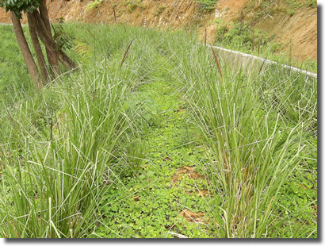

กรมทางหลวงได้ดำเนินการสนองพระราชดำริของพระบาทสมเด็จพระเจ้าอยู่หัว โดยการนำเทคนิควิธีการปลูกหญ้าแฝกมาใช้ในงานทาง เพื่อลดหรือป้องกันผลกระทบทางด้านสิ่งแวดล้อม การป้องกันแก้ไขความเสียหายเชิงลาดทางจากการชะล้างพังทลายของดินในสายทางพื้นที่ภูเขา ตั้งแต่ปี 2536 เนื่องจากหญ้าแฝกมีระบบรากยาว(2.5 - 3 ม.) แผ่กระจายหยั่งลึกสานกันหนาแน่นยึดเม็ดดินไว้ สามารถป้องกันการชะล้างพังทลายและการวิบัติเคลื่อนตัวระดับตื้นของดินเชิงลาดได้ ในแต่ละปี กรมทางหลวงดำเนินการปลูกหญ้าแฝกประมาณ 2.5 - 4 ล้านกล้า และมีโครงการ/กิจกรรมงานด้านหญ้าแฝกที่ดำเนินงานในรูปคณะกรรมการและคณะทำงานร่วมกับส่วนราชการอื่นๆอยู่ 3 คณะคือ
1 คณะกรรมการโครงการพัฒนาและรณรงค์การใช้หญ้าแฝกอันเนื่องมาจากพระราชดำริ สำนักงานคณะกรรมการพิเศษ เพื่อประสานงานโครงการอันเนื่องมาจากพระราชดำริ (สำนักงาน กปร.) เป็นแกนกลางในการประสานงานดำเนินการมี 35 หน่วยงานร่วมเป็นคณะกรรมการฯ ท่านอธิบดี กรมทางหลวงร่วมเป็นคณะกรรมการฯ ดำเนินการตั้งแต่ปี 2536 - ปัจจุบันตามแผนแม่บทการพัฒนา และรณรงค์การใช้หญ้าแฝกฉบับที่ 1 - 3 (ฉบับที่3 ปี พ.ศ.2546 - 2549) ภายในแผนปฏิบัติการ โครงการพัฒนาและรณรงค์การใช้หญ้าแฝกอันเนื่องมาจากพระราชดำริของกรมทางหลวง ซึ่งได้รับความเห็นชอบจากคณะรัฐมนตรี เมื่อวันที่ 1 เมษายน 2546 คือแผนงานการส่งเสริม การปลูกหญ้าแฝกเพื่อการอนุรักษ์ดินและน้ำ สายทางพื้นที่ภูเขาที่มีปัญหาการชะล้างพังทลายของดิน ดำเนินการปลูกหญ้าแฝกประมาณปีละ 2.5 - 3.5 ล้านกล้าประกอบด้วย
- โครงการปลูกหญ้าแฝกงานด้านบำรุงทาง กิจกรรมการปลูกหญ้าแฝกสำนักทางหลวง ประกอบด้วยสำนักทางหลวงที่ 1,2,4,6,9,13,14 และ 15
- โครงการปลูกหญ้าแฝกงานก่อสร้างสายทาง กิจกรรมการปลูกหญ้าแฝก โครงการก่อสร้างศูนย์สร้างทาง ประกอบด้วยศูนย์สร้างทางสงขลา, ขอนแก่น , ลำปางและตาก
2 คณะทำงานปลูกหญ้าแฝกมูลนิธิโครงการหลวง ดำเนินการตั้งแต่ ก.ย. 2546 - ปัจจุบัน ท่านอธิบดีกรมทางหลวงร่วมเป็นคณะทำงาน ได้รับเงินสนับสนุนการปลูกหญ้าแฝกและศึกษา ในทางหลวงหมายเลข 3272 บ.ไร่ – ปิล๊อก อ.ทองผาภูมิ ปี 2547 – 2549 ประมาณ 3 ล้านบาท และทางหลวงหมายเลข 1265 ตอน อ.ปาย - วัดจันทร์ ศูนย์สร้างทางลำปาง ประมาณ 338,400 บาท ปี 2547 - 2548 ดำเนินการปลูกหญ้าแฝกประมาณ 6 แสนกล้า
3 โครงการปลูกหญ้าแฝกเฉลิมพระเกียรติฯ ประจำปี 2549 – 2550 จัดตั้งเมื่อ 9 พฤษภาคม 2548 ท่านปลัดกระทรวงคมนาคมหรือผู้แทนเป็นกรรมการฯ กรมพัฒนาที่ดินเป็นแกนกลางในการประสานงาน ดำเนินการและให้การสนับสนุนพันธุ์กล้าหญ้าแฝก กระทรวงคมนาคม มอบหมายให้กรมทางหลวง ร่วมดำเนินการปลูกหญ้าแฝกเฉลิมพระเกียรติฯ โดยมีแผนงานการปลูกหญ้าแฝกโดยสำนักทางหลวง และศูนย์สร้างทางในปีต่างๆดังนี้
- ปี 2549 ประมาณ 2,800,000 กล้า
- ปี 2550 ประมาณ 4,500,000 กล้า

การปิดกั้นวัชพืชของถั่ว Pintoสามารถขึ้นปกคลุมพื้นที่ประมาณ 80 – 90 % ใน 1 ปี
https://www.doh.go.th/content/page/page/8034h